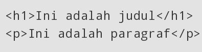
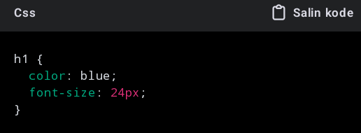
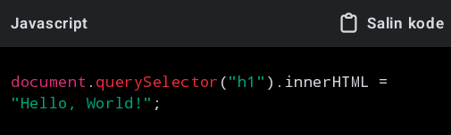

•Selamat-Datang•
Profil Saya
Nama: Ramon
Profesi: Siswa
hobi: Bulutangkis
Lokasi: Lahat, Sumsel, Indonesia
INFORMASI TENTANG SAYA
Hallo kamu love youuuuuuu, saya Ramon! Saya bersemangat di bidang "OLAHRAGA dan PEMROGRAMAN. Saya selalu tertarik untuk belajar hal baru".
• OLAHRAGA ?
Olahraga adalah aktivitas fisik yang dilakukan dengan tujuan untuk menjaga atau meningkatkan kebugaran tubuh, kesehatan, serta meningkatkan kemampuan fisik seseorang. Selain itu, olahraga juga bisa dilakukan sebagai bentuk hiburan, rekreasi, dan kompetisi, baik secara individu maupun tim. Ada berbagai macam jenis olahraga, mulai dari yang sederhana seperti berlari atau berenang, hingga yang lebih kompleks seperti sepak bola, bulu tangkis, basket, dan lain-lain. Manfaat olahraga tidak hanya terbatas pada kesehatan fisik, tetapi juga memberikan dampak positif pada kesehatan mental, seperti mengurangi stres, meningkatkan suasana hati, serta meningkatkan kualitas tidur.• PEMROGRAMAN ?
Pemrograman adalah proses menulis, menguji, memperbaiki, dan memelihara kode yang menjadi instruksi bagi komputer untuk menjalankan tugas tertentu. Kode ini ditulis dalam bahasa pemrograman seperti Python, Java, C++, dan lainnya. Pemrograman memungkinkan kita membuat perangkat lunak, aplikasi, situs web, game, dan berbagai teknologi lainnya. Tujuan utama pemrograman adalah untuk mengubah ide atau konsep menjadi sistem yang dapat bekerja secara otomatis di komputer atau perangkat digital. Dalam pemrograman, seorang pemrogrammer akan menggunakan logika dan algoritma untuk memecahkan masalah dan mengimplementasikannya dalam bentuk kode yang dapat dipahami oleh mesin. dan saya membuat web ini mengunakan html dan saya juga mengunakan js dan css apa itu html js dan css baca di bawahHTML (HyperText Markup Language), CSS (Cascading Style Sheets)
dan JavaScript (JS)
adalah tiga teknologi utama yang digunakan untuk membangun dan merancang situs web.kita mulai dari HTML.HTML (HyperText Markup Language) ?
HTML adalah bahasa markup yang digunakan untuk membuat struktur dan konten pada halaman web. Dengan HTML, kita dapat menentukan elemen-elemen seperti teks, gambar, tabel, tautan, dan formulir. HTML tidak berfokus pada tampilan halaman, tetapi lebih pada penyusunan elemen-elemen yang nantinya dapat diatur tampilannya dengan CSS.Contoh: CSS (Cascading Style Sheets) ?
CSS digunakan untuk mengatur tampilan atau desain dari elemen-elemen HTML. CSS memungkinkan kita untuk mengatur warna, font, layout, dan tata letak halaman secara keseluruhan. Dengan CSS, tampilan halaman web menjadi lebih menarik dan responsif di berbagai perangkat.Contoh: JS (JavaScript) ?
JavaScript adalah bahasa pemrograman yang digunakan untuk menambahkan interaktivitas pada halaman web. Dengan JavaScript, kita bisa membuat halaman lebih dinamis dan interaktif, seperti validasi formulir, pembuatan animasi, hingga pemrosesan data secara real-time.Contoh: Dengan menggabungkan ketiganya, kita dapat membuat situs web yang memiliki struktur baik (HTML), tampilan yang menarik (CSS), dan fungsionalitas interaktif (JavaScript).
• jelaskan apa manfaat dari pemrograman
Manfaat pemrograman
sangat luas, terutama dalam dunia modern yang semakin digital. Beberapa manfaat utama pemrograman meliputi:•Meningkatkan efisiensi dan otomatisasi:
Pemrograman memungkinkan untuk menciptakan program atau perangkat lunak yang dapat mengotomatiskan tugas-tugas berulang atau memakan waktu, sehingga mengurangi kesalahan manusia dan meningkatkan produktivitas.• Membantu dalam pemecahan masalah:
Pemrograman melatih cara berpikir logis dan analitis untuk memecahkan masalah secara sistematis. Ini juga membantu dalam menemukan solusi inovatif untuk masalah kompleks.•Pengembangan aplikasi dan layanan digital:
Pemrograman memungkinkan pengembangan berbagai aplikasi, baik untuk perangkat seluler, desktop, maupun web. Aplikasi-aplikasi ini dapat digunakan untuk berbagai keperluan seperti komunikasi, hiburan, bisnis, dan edukasi.•Kesempatan karier yang luas:
Keterampilan pemrograman sangat dibutuhkan di berbagai industri seperti teknologi, kesehatan, keuangan, dan manufaktur. Karier sebagai pengembang perangkat lunak, insinyur data, atau spesialis keamanan siber sangat diminati.•Meningkatkan inovasi dan kreativitas:
Dengan pemrograman, seseorang dapat menciptakan produk atau solusi baru yang belum ada sebelumnya. Ini membuka pintu bagi inovasi di berbagai bidang, termasuk AI, IoT, dan blockchain.•Kemandirian teknologi:
Menguasai pemrograman memungkinkan seseorang untuk mengembangkan sistem, alat, atau aplikasi mereka sendiri, sehingga tidak bergantung pada solusi komersial yang sudah ada.•Kolaborasi dan komunitas global:
Pemrograman juga mendorong kolaborasi di komunitas global. Banyak proyek perangkat lunak bersifat open-source, yang memungkinkan ribuan pengembang di seluruh dunia untuk bekerja bersama dalam proyek yang sama.•Dengan berbagai manfaat ini, pemrograman menjadi keterampilan penting di era digital dan teknologi tinggi saat ini.
Sekian informasi saya.Mohon maaf bila ada kata yang salah atau teks yang kurang jelas , kalau mau jelas anda bisa telepon saya . hubungi saya di bawah 🥳Terima kasih👋🏻😊🙏🏻😎👉🏻.
⚠️INFO INI AKAN SELALU DI UPDATE⚠️